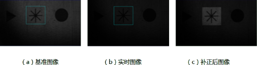
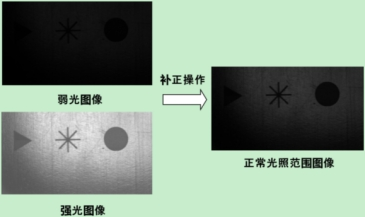

Nhiệm vụ chính của công cụ bù sáng là điều chỉnh hình ảnh thời gian thực dựa trên giá trị trung bình độ sáng của ảnh chuẩn (giá trị chuẩn), nhằm giảm ảnh hưởng của sự thay đổi ánh sáng (yếu đi hoặc mạnh lên) đối với hình ảnh.

| Phân loại | Tên tham số | Mô tả tham số |
|---|---|---|
| Cửa sổ thuộc tính | Phương pháp lấy giá trị chuẩn | Có hai cách lấy giá trị chuẩn: sử dụng ảnh chuẩn và chỉ định trực tiếp. |
| Giá trị chuẩn | Chỉ hiển thị khi phương pháp lấy giá trị chuẩn là “chỉ định trực tiếp”. Phạm vi 0-255, giá trị càng lớn thì ảnh sau khi bù sáng càng sáng. | |
| Thiết lập loại ROI | Có hai loại: ROI ảnh chuẩn và ROI bù sáng. | |
| ROI ảnh chuẩn | ROI ảnh chuẩn có bốn loại: toàn ảnh, hình chữ nhật, hình chữ nhật affine và đa giác. | |
| ROI hình chữ nhật của ảnh chuẩn | ROI ảnh chuẩn dạng hình chữ nhật gồm X, Y, W, H — tức tọa độ góc trái trên và chiều dài, chiều rộng của hình chữ nhật. | |
| ROI hình chữ nhật affine của ảnh chuẩn | ROI ảnh chuẩn dạng hình chữ nhật affine gồm Center (X/Y), Size (SizeX/SizeY), Rotation (góc xoay) và Skew (góc nghiêng). | |
| ROI đa giác của ảnh chuẩn | VerticesNum (số đỉnh) và Vertices (tọa độ các đỉnh). | |
| ROI bù sáng | Khi chọn loại ROI là ROI bù sáng. Có bốn loại: toàn ảnh, hình chữ nhật, hình chữ nhật affine và đa giác. | |
| ROI hình chữ nhật bù sáng | ROI bù sáng dạng hình chữ nhật gồm X, Y, W, H — tức tọa độ góc trái trên và chiều dài, chiều rộng của hình chữ nhật. | |
| ROI hình chữ nhật affine bù sáng | ROI bù sáng dạng hình chữ nhật affine gồm Center (X/Y), Size (SizeX/SizeY), Rotation (góc xoay) và Skew (góc nghiêng). | |
| ROI đa giác bù sáng | VerticesNum (số đỉnh) và Vertices (tọa độ các đỉnh). | |
| Bật tính toán song song | Cho phép bật hoặc tắt tính toán song song. Nếu chọn “Có”, thuật toán sẽ sử dụng OpenMP để tính toán song song, giúp tăng tốc xử lý nhưng có thể khiến thời gian xử lý không ổn định. Nếu chọn “Không”, OpenMP sẽ bị tắt. | |
| Tỷ lệ phần trăm số luồng | Thiết lập tỷ lệ phần trăm số luồng cho tính toán song song. Phạm vi hợp lệ (0, 0.75], tương ứng (0%, 75%]. | |
| Cửa sổ hình ảnh | Ảnh đầu vào | Hình ảnh cần bù sáng. |
| GUI chọn ROI | Dùng để thiết lập vùng trong ảnh đầu vào cần bù sáng, hoặc thiết lập vùng chọn trong ảnh chuẩn để làm ảnh chuẩn. | |
| Chuỗi dữ liệu | Ảnh đầu vào | Hình ảnh cần bù sáng. |
| Ảnh chuẩn | Ảnh chuẩn dùng để bù sáng. | |
| Giao diện nâng cao | Không | Không |
| 分类 | 参数名称 | 参数描述 |
|---|---|---|
| 监视窗口 | 当前基准值 | 照明补正的基准值。 |
| 输出图像 | 经过照明补正的结果图像。 | |
| 执行结果 | 工具执行结果。 | |
| 执行时间 | 工具执行时间。 | |
| 图像窗口 | 输出图像 | 经过照明补正的结果图像。 |
| 执行结果 | 显示工具执行结果，执行成功显示“OK”，执行失败显示“NG”，同监视窗口的执行结果参数。 | |
| 数据链 | 输出图像 | 经过照明补正的结果图像。 |
照明补正工具实质是将弱光或强光下的图像补正至一个正常光照范围的图像，具体实现方法为对当前图像乘以一个补正系数，补正系数由基准图像的均值除以当前图像的均值获得（图像的灰度均值反映了图像亮度的整体情况。图像较亮，则灰度均值较大，图像较暗，则灰度均值较小）。

参见“\Samples\照明补正工具.gvp”。